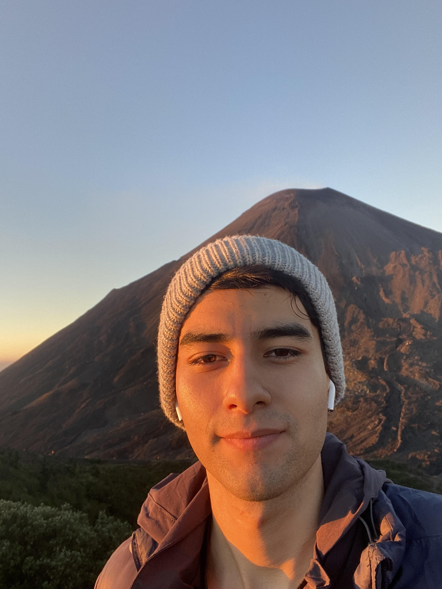
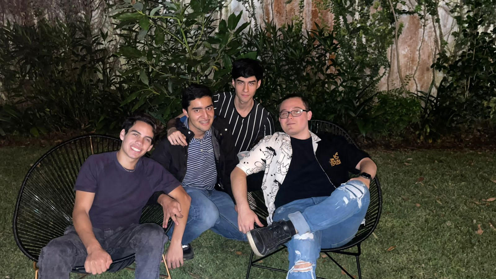
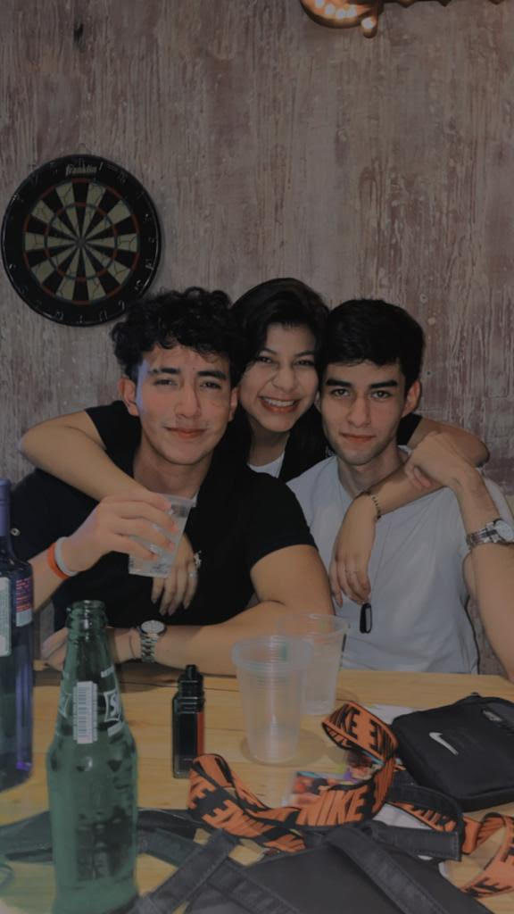

<div class="container">
  <div class="about-container">
    <h1>ACERCA DE MÍ</h1>
    <p>¡Hola! Mi nombre es Gabriel Paz. Nací el 1 de marzo de 2003, y actualmente tengo 21 años. Estoy cursando Ingeniería en Ciencias de la Computación en la Universidad del Valle de Guatemala, un camino que elegí por mi profundo interés en la tecnología y el desarrollo de software.</p>
    <p>Trabajo como Desarrollador Junior Front-End en Byte, S.A., donde tengo la oportunidad de aplicar mis habilidades en proyectos significativos, incluyendo uno para un destacado banco de la región. Este rol me ha permitido crecer profesionalmente y me ha enseñado la importancia de la precisión y la innovación en el desarrollo de software.</p>
    <p>Fuera del trabajo, mis pasiones incluyen disfrutar del anime, jugar videojuegos y participar en actividades deportivas. Estos pasatiempos no solo me relajan, sino que también me inspiran a incorporar elementos de juego y narrativa en mis proyectos de programación.</p>
    <p>Mi objetivo es convertirme en un profesional destacado en el campo de la tecnología, continuamente expandiendo mis habilidades y contribuyendo a soluciones que tengan un impacto real en la sociedad. Espero seguir creciendo y aprendiendo cada día, empujando los límites de lo que puedo lograr como desarrollador.</p>
    <a routerLink="/contact" class="contact-button">Contáctame</a>
    <div class="slider-frame">
      <ul>
          <li></li>
          <li></li>
          <li></li>
          <li></li>
      </ul>
  </div>
  </div>
</div>

